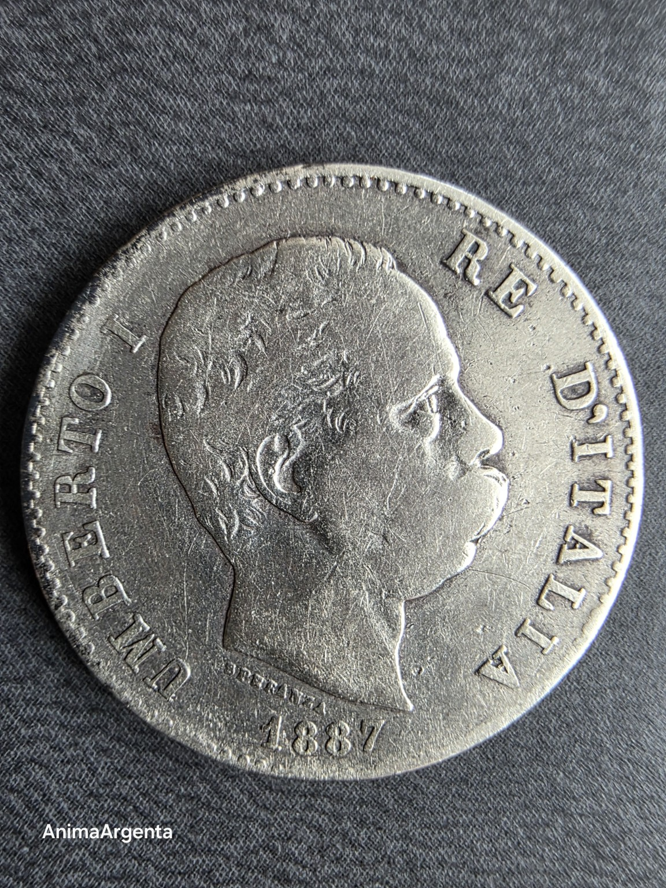
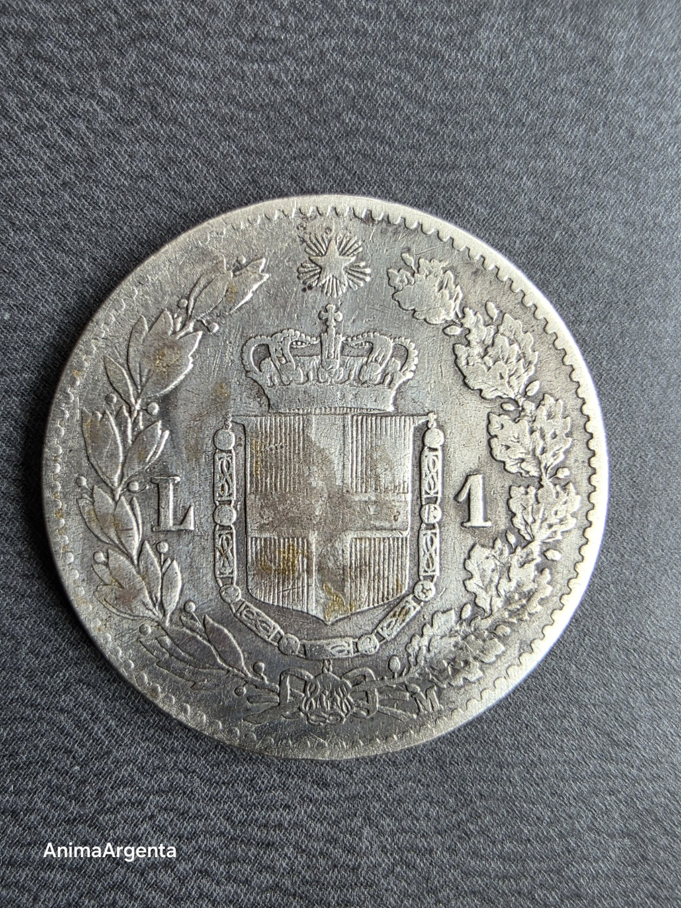
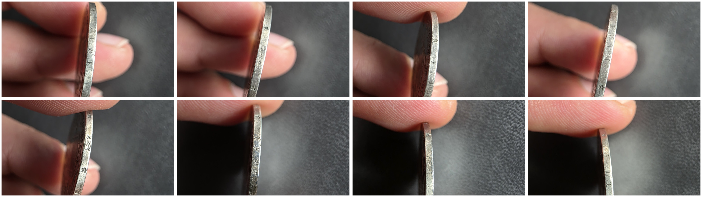

La promesa en el canto
AA-1887-01 · edición 1/1



Una lira pequeña conserva una declaración que no se muestra de frente. Al girarla aparece FERT, el lema de Saboya: la identidad de una dinastía grabada precisamente en la parte que solo se descubre al sostener la moneda.
- Objeto
- Este ejemplar físico concreto
- Emisión
- 16.304.648 ejemplares
- Metal
- Plata 0,835
- Peso oficial
- 5 g
- Diámetro
- 23 mm
- Ceca
- Milán (M)
- Grabador
- Filippo Speranza
- Canto
- FERT con motivos ornamentales
- Estado digital
- Publicado y verificado en Stellar
Una moneda física = una pieza digital. Emisión prevista: 1. Sin reemisión.